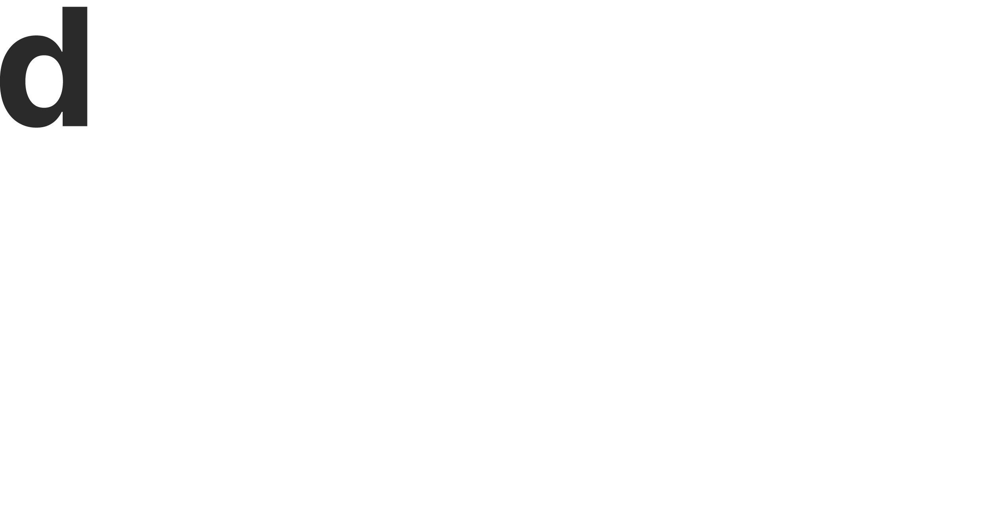

Jeune designer, je privilégie dans mes projets une vision centrée utilisateur. Je m’intéresse aux dimensions anthropologique et sociologique que porte le design pour créer du sens entre l’environnement et l’humain.Forte d’un master de recherche en design à l’École Normale de Paris Saclay, j’aime élaborer des projets sous forme de recherche-action. Entre axes de recherche et expérimentations, je formalise des objets, des services et des parcours utilisateurs.J’emprunte des outils sociologiques et des méthodes créatives du design thinking pour développer des projets qui font sens aux différents usagers. Je travaille régulièrement à partir de témoignages, questionnaires, entretiens, observations terrain pour une meilleure expérience utilisateur.
 Forte d’un master de recherche en design à l’École Normale de Paris Saclay, j’aime élaborer des projets sous forme de recherche-action. Entre axes de recherche et expérimentations, je formalise des objets, des services et des parcours utilisateurs.
Forte d’un master de recherche en design à l’École Normale de Paris Saclay, j’aime élaborer des projets sous forme de recherche-action. Entre axes de recherche et expérimentations, je formalise des objets, des services et des parcours utilisateurs.
 J’emprunte des outils sociologiques et des méthodes créatives du design thinking pour développer des projets qui font sens aux différents usagers. Je travaille régulièrement à partir de témoignages, questionnaires, entretiens, observations terrain pour une meilleure expérience utilisateur.
J’emprunte des outils sociologiques et des méthodes créatives du design thinking pour développer des projets qui font sens aux différents usagers. Je travaille régulièrement à partir de témoignages, questionnaires, entretiens, observations terrain pour une meilleure expérience utilisateur.